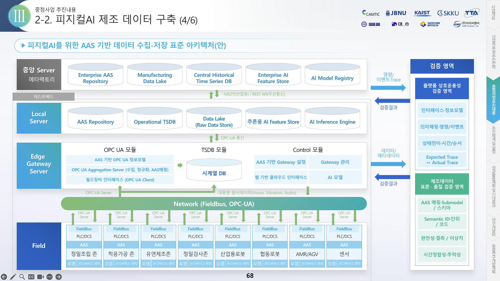

참고 자료
피지컬AI를 위한 AAS 기반 데이터 수집–저장 표준 아키텍처(안)

출처: 기술실증 테스트베드 발표자료 「2-2. 피지컬AI 제조 데이터 구축(4/6)」 68쪽. 정밀조립존 OCS Cell(Local Server–Edge Gateway 데이터 계층) 설계의 기준 그림. 그림을 누르면 원본 크기로 열림.
금액 단위 천원, VAT 별도 · 소스: github.com/theuniversepark/micro-cell
총괄5-세부1 기술실증 테스트베드 · A-3 정밀조립(Micro) ZONE · 설계 추정본
참고 자료

출처: 기술실증 테스트베드 발표자료 「2-2. 피지컬AI 제조 데이터 구축(4/6)」 68쪽. 정밀조립존 OCS Cell(Local Server–Edge Gateway 데이터 계층) 설계의 기준 그림. 그림을 누르면 원본 크기로 열림.
금액 단위 천원, VAT 별도 · 소스: github.com/theuniversepark/micro-cell